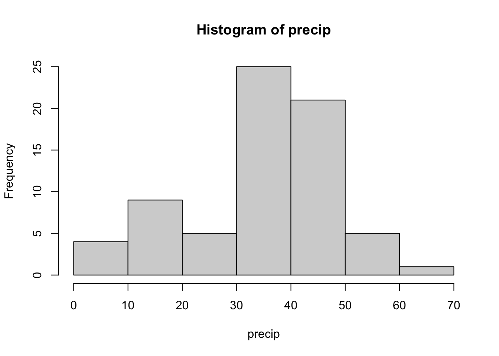

school = c(82,69,73,43,58,56,76,65)
home = c(63,42,74,37,51,43,80,62)Practice Problems
Nonparametric Stats
Problem 1
(Nursery School Intervention). This dataset is drawn from a study discussed by Siegel (1956). It involves eight pairs of identical twins who are of nursery school age. In the study, for each pair, one is randomly selected to attend nursery school while the other remains at home. At the end of the study period, all 16 children are given the same social awareness test.
For each pair, the response of interest is:
Test the hypothesis that the nursery school twin has higher social awareness test score compared to the home school twin.
- Use the Sign test
- Use the Wilxocon signed ranks test
Problem 2
This question is based on the case control study a cancer (Breslow et al. 1980). These data are available in the datasets package.
library(datasets)
head(esoph) agegp alcgp tobgp ncases ncontrols
1 25-34 0-39g/day 0-9g/day 0 40
2 25-34 0-39g/day 10-19 0 10
3 25-34 0-39g/day 20-29 0 6
4 25-34 0-39g/day 30+ 0 5
5 25-34 40-79 0-9g/day 0 27
6 25-34 40-79 10-19 0 7We want test the hypothesis that alcohol consumption is the same in the two groups, using as our dataset a sample of cases and controls.
Problem 3
The 60% of all stolen cars are recovered. 2% of all cars are stolen each year. What is the probability of a person having a car stolen and recovered? Define your events!
Problem Write the probability mass function of a Binomial random variable and its definition. Also state the parameters as well as the assumptions.
Problem 4
If a football team has probability 0.4 of losing each game (assuming no ties occur and independent outcomes from game to game), what is the probability of the team winning only 1 game or less in a 10-game season?
Problem 5
If the probability of arriving at an intersection while the traffic light is green is 0.35, and the probability of the light being yellow is 0.1, what is the probability that the light is red?
Problem 6
Consider \(X\) is a random variable and its distribution function is given: P(X=0)=0.3, P(X=1)=0.4, P(X=2)=0.1, and P(X=4)=0.2. Find:
- The expected value, E(X)
The variance, Var(X)
The median
The upper quartile, \(X_{0.75}\)
Problem 7
State the four scales of measurement and give an example of a statistical measure (mean, median, etc.) that can be used with each of them.
Problem 8
Give an advantage and a disadvantage of nonparametric statistical methods.
Problem 9
A random sample of twenty Texas Tech law school graduates took the bar exam and 18 of them passed. Could we say that the probability of a Texas Tech law school graduate passing the law exam is 0.8? \(5\%\) level of significance.
The hypotheses \(H_0\), \(H_1\)
The test statistic T and null distribution
The p-value
The decision and interpretation
Problem 10
Write the equation of the Tolerance limits.
Problem 11
A fitness gym has measured the percentage of fat on 86 of its members. What percent of its members have fat percentages between the smallest and largest of the percentages measured on the 86 members in the sample, with 90% confidence?
Problem 12
Seven students were taught algebra using the present method and a new method. Test if there are differences in the scores between the two methods:
Present method: 62, 72, 79, 69, 84, 80, 78
New method: 64, 60, 68, 73, 72, 70, 80
Use Sign test.
Use Wilcoxon signed ranks test.
Problem 13
Test Normality of the data named precip. This data set is built in R package datasets. Make sure you first download and load the package.
library(datasets)
hist(precip)
- Use Chi-squared test
- Kolmogorov-Smirnov test
- Shapiro-Wilk test